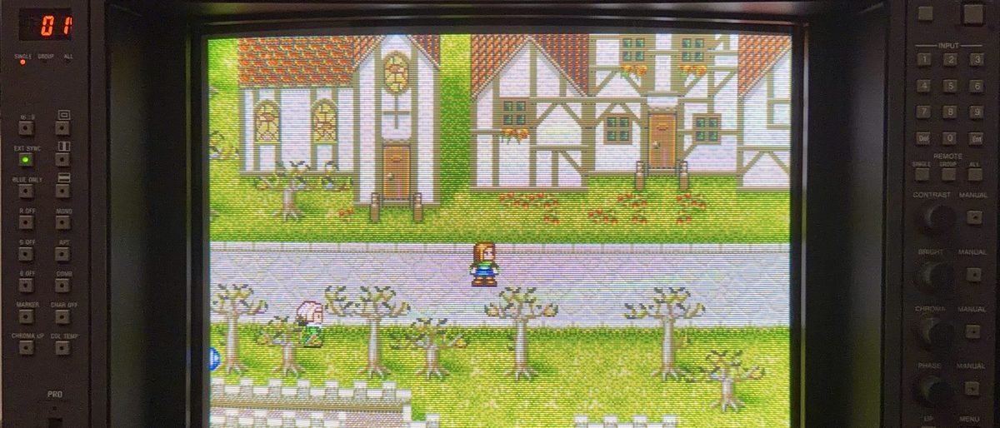
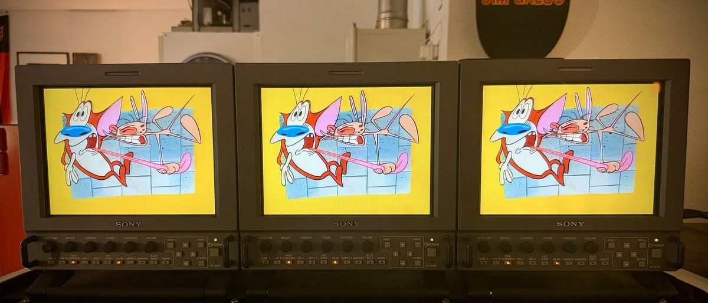
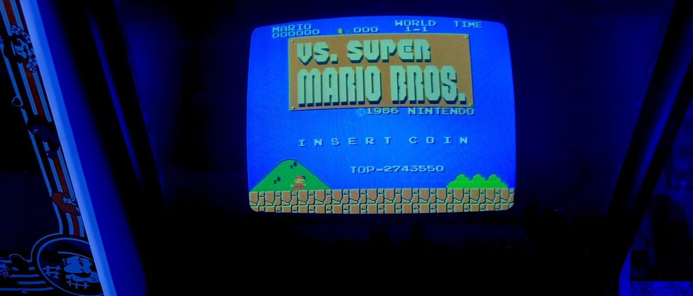

Stories
The written side of the arcade — deep dives, restorations, and the history hiding inside the machines. New stories land here as they're written. The words they use without explaining are in the glossary.

NewField Guide 4 min readHow to Spot Professional Glass in the Wild
The best screens ever pointed at a game are still hiding in thrift stores, estate garages and surplus auctions, priced like old TVs. The badge, the BNC tells, the lookalikes — and the thirty-second check before you haul it home.
Read the newest story →
More stories
 NewMonograph
About 2 hours
NewMonograph
About 2 hoursThe Sony AMS-100 Has No Written History
A 1RU broadcast confidence monitor with two option slots, three input boards and not one article written about it anywhere. This is the first: seven documented frames, twelve boards, the service internals, and a market that has almost never been priced.
Read the story →
 NewBuyer's Guide
9 min read
NewBuyer's Guide
9 min readWhat to Check Before You Buy a PVM-20L5
The one check that tells you most, how to judge a tube that has no hours counter, what the bands actually are — and why a seventy-three pound monitor is something you drive to rather than something you ship.
Read the story →
 Did You Know?
3 min read
Did You Know?
3 min readAncestor and Descendant
Sony's AMS-3 and AMS-100 do the same job in the same kind of room, thirty years apart — one with a transformer and a wall of heatsink, one with SDI and plug-in cards. Stacked on the bench, the difference is not subtle.
Read the story →
 Magazine · Vol. 1
About 30 min read
Magazine · Vol. 1
About 30 min readTRINITRON FLEET
An interactive magazine documenting the Sony professional monitor fleet — eight models, from the PVM-2950Q to the LMD-9050 squadron, and the calibration work that keeps them honest. Future volumes will follow as the fleet evolves.
Read Vol. 1 →

The Setup 6 min readHow the Signal Gets to the Glass
Twenty-five consoles, thirteen professional monitors, and not one scaler in the building — the switchers, the SCART-to-BNC cables and the distribution amp that make it all connect.
Read the story →

Did You Know? 2 min readThe Hardest Super Mario Bros. Most People Never Noticed
The VS. UniSystem's Super Mario Bros. looks exactly like the NES classic — and was quietly rebuilt to fight back: removed 1-ups, patched turtle tricks, and levels that later became The Lost Levels.
Read the story →
 Restoration Story
4 min read
Restoration Story
4 min readThe Red Tent
Nintendo's VS. DualSystem cocktail — found beat-up on Craigslist, restored down to the last screw, and now running VS. Excitebike on one side and a genuinely rare official PlayChoice-10 kit on the other.
Read the story →
 Did You Know?
3 min read
Did You Know?
3 min readThe Best Screen for Retro Games Was Never Sold to Gamers
PVM vs. BVM: what Sony's professional monitors actually were, why RGB changes everything, and which one to buy today — answered from a fleet of thirteen.
Read the story →
 The Machines
3 min read
The Machines
3 min readThe Mini Cute
Capcom's smallest candy cab, built for Japanese kids in 1991 — and how this pink one crossed the world in a hand-built crate from Sweden, thanks to a friendship that started on KLOV.
Read the story →
More in the works
On the docket: the AMS-3 triage write-up, once the keeper is healthy. The KLOV Arm Wrestling restoration thread holds you over in the meantime.
Off the beat Not about the arcade at all
NewMagazine · Issue One About 24 min readThe Orlandu 100
A hundred favorite films, ordered by head-to-head duel rather than by argument — every position on the list won against another film. With the Rotten Tomatoes scores beside each one, the eight this list defends hardest, and the six nobody else in the room liked either. No CRTs, no coin doors — just the same instinct pointed somewhere else.
Read the issue →